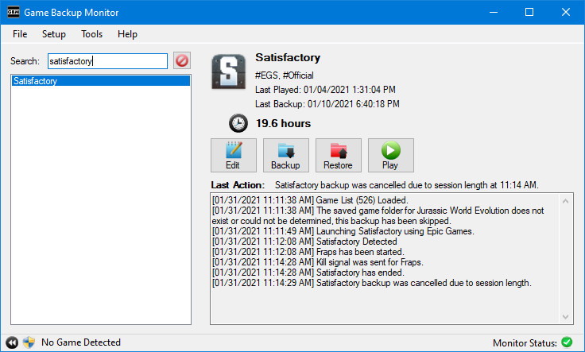
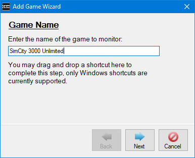

Screenshots

A game being detected.

A backup running when the game ended.

A detailed log displays all actions performed by GBM.
The Game Manager, an all-in-one management screen.

All functions are available from the system tray.

GBM allows you to automatically launch other software whenever a game is detected, such as overlays.

Add Game Wizard helps novice users create their own configurations.